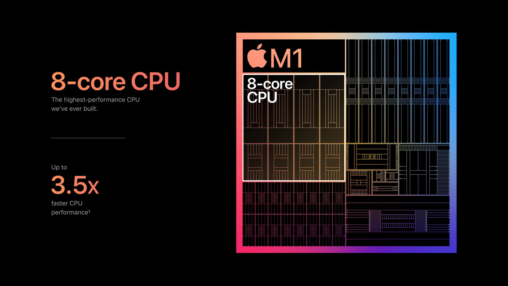

2020년 11월 10일 (현지 시각 기준) Apple 11월 이벤트에서 Macbook Air 및 Mac mini와 함께 등장하였습니다. 자체 제작 Apple Silicon인 M1 SoC를 탑재하였다. Macbook Pro i7 모델과 비교하여 CPU 성능은 2.8배, 그래픽 성능은 5배, 머신러닝 성능은 11배가 증가하였으며 배터리 지속 시간은 역대 Macbook 모델 중 가장 긴 최대 20시간이다.
Apple M1 칩은 13형 Macbook Pro에 믿을 수 없는 만큼의 속도와 파워를 선사합니다. 최대 2.8배 향상된 CPU 성능, 최대 5베 빨라진 그래픽 속도, 최대 11배 빨라진 머신 러닝 성능을 구현하는 최첨단 Apple 제작 Neural Engine, 여기에 무려 20시간 지속되는 Mac 사상 가장 오래가는 배터리까지. 외장은 Apple의 가장 사랑받는 프로용 노트북 그대로, 하지만 그 능력은 한 차원 더 높아졌습니다.